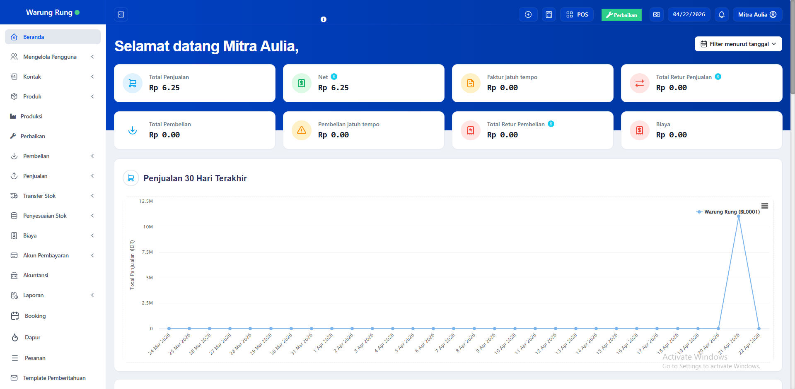

Platform Kasir Terpadu
Bisnis Lebih Efisien
dengan Kasir Digital Andal
Tangani setiap transaksi, kendalikan stok secara otomatis, dan dapatkan laporan bisnis kapan saja — dalam satu platform yang menyatu.
3+
Pilihan Paket Usaha
Hybrid
Online & Offline
18+
Bulan Dukungan Teknis
UMKM
Semua Skala Bisnis
